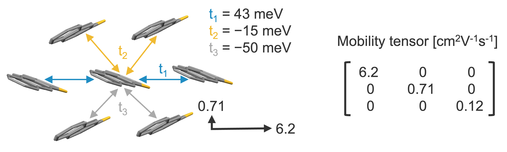
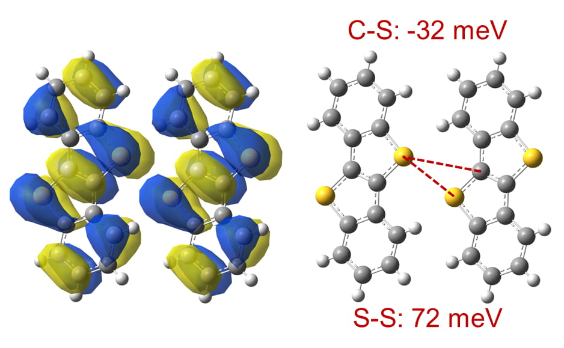
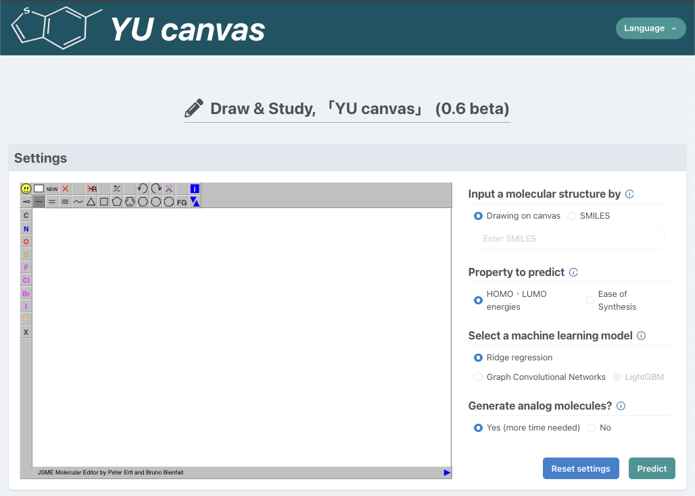

[02]
A wearable AI sensing system for non-invasive and experimental characterization of biological tissue hardness
DOI 10.1016/j.cej.2025.162180
◯ is the presenter
◯ is the presenter

Program for calculating mobility tensors of organic semiconductors, developed and released as open-source software for use by other researchers.
GitHub Description
Program for calculating interatomic transfer integrals used in the paper (Sci. Technol. Adv. Mater. 2024), released as open-source software.
GitHub Description
Molecular design tool. Responsible for the part of generating similar molecules by AI.
Special Page Description